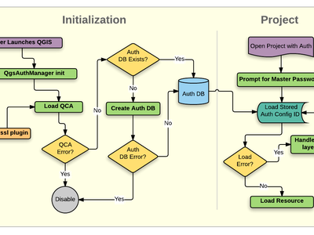
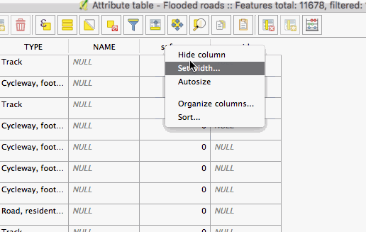
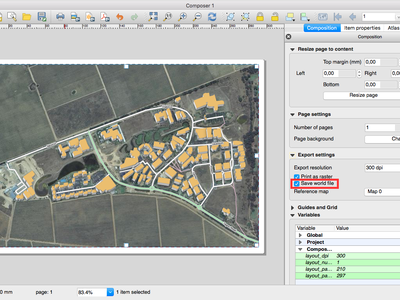
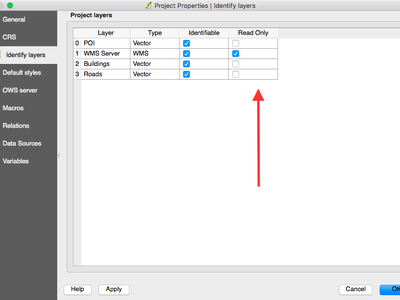
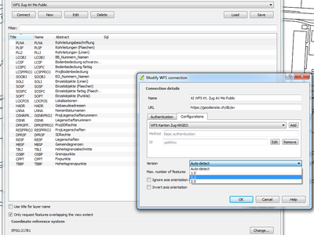

A QGIS 2.16 verzió változásnaplója¶

Ez a változásnapló a következő QGIS kiadáshoz - 2.16.0 verzió «Nødebo» - készült. Nødebo Erdő és Táj Főiskolájának, Földtudományi és Természetes Erőforrás Menedzsment tanszéke volt a házigazdája az Első Nemzetközi QGIS konferenciának és fejlesztői találkozónak 2015 májusában.
Ez nem egy hosszútávú kiadás
Ez a kiadás nem egy hosszú távú (LTR) kiadás.A felhasználók, akik egy évig nem változó, de hibajavításokat kapó QGIS verziót szeretnének, azokat az aktuális 2.14 LTR kiadás használatára invitáljuk (mely a QGIS 2.16 kiadással vált a hivatalos LTR változattá).
Újdonságok a QGIS 2.16 «Nødebo»-ban
Ha a QGIS 2.14-ről frissít, akkor nagyon sok újdonságot talál ebben a kiadásban. Arra bátorítjuk, hogy olvassa át az előző kiadások változásnaplóját, mivel a QGIS 2.16 kiadás tartalmazza az azokban szereplő újdonságokat is.
Amikor egy új funkciót adnak a szoftverhez azzal az új hibák lehetőségét is megteremtik - ha bármilyen problémával találkozik ebben a kiadásban, kérjük küldjön egy jelzést a QGIS hibakövetőben.

Nødebo kiejtése…
Köszönet
We would like to thank the developers, documenters, testers and all the many folks out there who volunteer their time and effort (or fund people to do so). From the QGIS community we hope you enjoy this release! If you wish to donate time, money or otherwise get involved in making QGIS more awesome, please wander along to qgis.org and lend a hand!
QGIS is supported by donors and sponsors. A current list of donors who have made financial contributions large and small to the project can be seen on our donors list. If you would like to become an official project sponsor, please visit our sponsorship page for details. Sponsoring QGIS helps us to fund our six monthly developer meetings, maintain project infrastructure and fund bug fixing efforts. A complete list of current sponsors is provided below - our very great thank you to all of our sponsors!
A QGIS szabad szoftver és semmi sem kötelezi arra, hogy fizessen a használatáért. Valójában a QGIS használatára biztatjuk az embereket, legyenek bárhol a világon, pénzügyi és társadalmi helyzettől függetlenül. Hiszünk benne, hogy térbeli döntéstámogatási eszközök biztosítása jobb társadalmakat eredményez az emberiség egészének hasznára. Ha lehetősége van a QGIS támogatására, akkor kérjük tegye meg: 
- QGIS 2.16.0 szponzorai
- Általános
- Felhasználói felület
- Funkció: Térképvászon nagyító
- Funkció: Térkép nagyítás fejlesztések
- Funkció: Újratervezett interaktív színátmenet szerkesztő
- Funkció: Alapértelmezett nézet választása az attribútum párbeszédblakra
- Funkció: Fejlesztések a felbukkanó naptárhoz
- Funkció: Továbbfejlesztett szín kiválasztó
- Funkció: Cella tartalom másolás az attribútum táblából
- Funkció: Javított HiDPI támogatás
- Funkció: Javított viselkedés a térkép szelekció eszközhöz
- Dokumentáció frissítések
- Jelrendszer
- Funkció: Nyíl szimbólum réteg
- Funkció: Új „Kitöltött jel” szimbólum réteg típus
- Funkció: Új megközelíthetőség és gyengén-látók szimbólumok
- Funkció: új egyszerű szimbólumok
- Funkció: „Nincs szimbólum” megjelenítő
- Funkció: Több beállítás a centrális pont kitöltés megjelenítéshez
- Funkció: Körvonal beállítás a betűkészlet jel szimbólumokra
- Funkció: Körvonal kapcsolódás stílus állítása egyszerű, ellipszis és betűkészlet jelekre
- Funkció: Új térkép eszköz a pont szimbólum eltolás interaktív beállítására
- Funkció: Stílus dokk
- Címkézés
- Diagramok
- Megjelenítés
- Digitalizálás
- Adatkezelés
- Funkció: Új attribútum tábla konfiguráció beállítások
- Funkció: Több oszlop az attribútum űrlapban
- Funkció: Az exportálni kívánt attribútumok szabályozása egy vektor réteg mentése során
- Funkció: Űrlap nézet: az oszlop oldal most már rendezhető
- Funkció: Kapcsolat hivatkozás vezérlő: gyorsbillentyű az új értékek hozzáadására
- Funkció: DXF export fejlesztések
- Funkció: Felső szintű vezérlők a húzd és ejtsd tervezőben
- Funkció: Űrlap alapú kiválasztás és szűrés
- Funkció: GeoPackage rétegek létrehozása
- Funkció: Korlátozások a vezérlőkön
- Funkció: Attribútumok szerkesztése több elemre párhuzamosan
- Réteg jelmagyarázat
- Térkép összeállítás
- Funkció: Új eszköz a felületek és törtvonalak rajzolására
- Funkció: Relatív hivatkozások az összeállítás címkékben
- Funkció: Atlasz elemek beágyazva az összeállítás HTML forrásba, GeoJSON-ként
- Funkció: Paraméterezett SVG támogatás az összeállítás SVG képeire
- Funkció: HTML könnyebb használata a címkékben
- Funkció: Georeferált eredmények (pl. PDF) a lap összeállításból
- Funkció: A térkép összeállítások most már automatikusan frissülnek a készletekkel
- Elemző eszközök
- Funkció: Névvel bíró paraméterek a kifejezésekben
- Funkció: Több távolság mértékegység
- Funkció: Változások a kifejezésekhez
- Funkció: Statisztika szöveg és dátum mezőkre
- Funkció: A görbepont sugarának megjelenítése az azonosítás eszközben
- Funkció: Halmazok támogatása a kifejezésekre
- Funkció: Az fTools modult a Feldolgozás algoritmusok helyettesítik
- Feldolgozás
- Funkció: Pont helyzet beállítása a vászonra történt kattintással
- Funkció: Támogatás a kifejezésekre és változókra
- Funkció: Előre konfigurált algoritmusok
- Funkció: Egy modul létrehozása szkript-alapú algoritmusokkal az eszköztárból
- Funkció: Hitelesítés kezelő használata a PostGIS kapcsolt algoritmusokban
- Funkció: Támogatás a geometria nélküli táblák írására
- Funkció: További GRASS algoritmusok a feldolgozásban
- Adatszolgáltatók
- Funkció: Az OGR adathalmazok alapértelmezetten írásvédett módban lesznek megnyitva
- Funkció: Fejlesztve lett a Postgres DOMAIN típus mezők kezelése
- Funkció: A vektor rétegek írásvédett módba tehetőek a projekt beállításokban
- Funkció: DB2 adatbázis támogatás
- Funkció: Postgres megvalósított nézetek frissítése az adatbázis kezelőben
- Funkció: Látható az OGR FID attribútum
- Funkció: ArcGIS Map és Feature REST szolgáltatások
- Funkció: Stílusok mentése MS SQL és Oracle adatbázisokba
- Funkció: réteg mezők átnevezése
- Funkció: Alapszintű támogatás az Oracle Munkaterület Kezelőre
- Funkció: Nagy fejlesztések a WFS szolgáltatóhoz
- Funkció: Alapértelmezett értékek generálása a Postgres rétegeken „időben”
- QGIS Szerver
- Modulok
- Programozhatóság
- Fontos javítások
QGIS 2.16.0 szponzorai¶
Évente különböző szervezetektől is kapunk támogatást, akik elismerik az általunk végzett munkát és szeretnék megkönnyíteni a projektbe fektetett fejlesztési erőfeszítések fenntartását. Ezen szponzorok listája látható lentebb a köszönetünkkel.
  QGIS felhasználói csoport, Svájc, Svájc (2016.06-2017.06.) QGIS felhasználói csoport, Svájc, Svájc (2016.06-2017.06.) |
  Vorarlberg tartomány, Ausztria (2011.11-2017.06.) Vorarlberg tartomány, Ausztria (2011.11-2017.06.) |
 Office of Public Works, Ireland, Írország (2014.12-2016.12.) Office of Public Works, Ireland, Írország (2014.12-2016.12.) |
 GAIA mbh, Németország (06.2013-11.2016) GAIA mbh, Németország (06.2013-11.2016) |
 Sourcepole AG, Svájc (10.2014-10.2016) Sourcepole AG, Svájc (10.2014-10.2016) |
www.terrelogiche.com, Olaszország (06.2015-06.2017) |
QGIS-PT (Portuguese QGIS user group), Portugália (06.2016-06.2017) |
NCC, Svédország (05.2016-05.2017) |
SOLTIG (Soluciones en Tecnologías de Información Geográfica), Costa Rica (06.2016-06.2017) |
|
Gaia3D, Inc., Dél-Korea (05.2015-05.2017) |
GEPOL, Lengyelország (04.2016-04.2017) |
Royal Borough of Windsor and Maidenhead, UK (04.2015-04.2017) |
GFI - Gesellschaft für Informationstechnologie mbH, Németország (04.2015-04.2017) |
Teaching Jobs with Footprints, Kanada (04.2016-04-2017) |
FORNAT AG, Svájc (04.2014-04.2017) |
|
National Parks UK, Egyesült Királyság (03.2016-03-2017) |
KBB Underground Technologies, Németország (03.2014-03.2017) |
BGEO OPEN GIS, SL, Spanyolország (03.2016-03-2017) |
Ager Technology, Spanyolország (03.2014-03.2017) |
Asociación Geoinnova, Spanyolország (03.2016-03-2017) |
Gis3W, Olaszország (01.2014-01.2017) |
|
GIS-Support, Lengyelország (02.2015-03-2017) |
www.molitec.it, Olaszország (01.2014-03.2017) |
Chartwell Consultants Ltd., Kanada (03.2015-03.2017) |
Trage Wegen vzw, Belgium (03.2015-03.2017) |
GKG Kassel (Dr.-Ing. Claas Leiner), Németország (03.2014-03.2017) |
CawdorForestry Resource Management, Skócia (02.2016-02.2017) |
|
ChameleonJohn, USA (02.2016-02.2017) |
2D3D.GIS, Franciaország (12.2015-12.2016) |
Dr. Kerth + Lampe Geo-Infometric GmbH, Németország (12.2015-12.2016) |
MappingGIS, Spanyolország (11.2015-11.2016) |
HostingFacts.com, Észtország (12.2015-12.2016) |
Urbsol, Ausztrália (11.2014-11.2016) |
Lutra Consulting, UK (10.2015-10.2016) |
WhereGroup GmbH & Co. KG, Németország (08.2015-08.2016) |
Nicholas Pearson Associates, UK (07.2015-07.2016) |
QGIS Polska, Lengyelország (07.2015-07.2016) |


{kind=link}
{kind=link}
{kind=link}
{kind=link}
Általános¶
Funkció: elemek másolása GeoJSON formátumban¶
Az előző WKT másolási beállításokban csak „Egyszerű szöveg, csak attribútumok”, „Egyszerű szöveg, WKT geometria” választási lehetőség volt. Ez most ki lett bővítve az új „GeoJSON” opcióval. Amikor ez van kiválasztva, akkor a QGIS az elemek vágólapra történő másolásakor GeoJSON szövegreprezentációba teszi az elemeket, hogy azokat könnyen be lehessen illeszteni más alkalmazás/JavaScript kódba. Ez az opció megtalálható itt: Beállítások-> Beállítások-> Adatforrások -> Elemek másolása mint.

Ezt a funkciót fejlesztette Nyall Dawson (North Road)
Funkció: térbeli könyvjelzők tárolása a projekt fájlokban¶
Ha térbeli könyvjelzőt hoz létre, most választhat, hogy a könyvjelzőt az aktív projekt fájljába tárolja. Görgesse a könyvjelzők panelt, hogy megtalálja a jelölőnégyzetet, mely engedélyezi ezt lehetőséget.

Ezt a funkciót fejlesztette: Stéphane Brunner
Funkció: GNSS GNRMC üzenetek támogatása¶
A QGIS most képes a GLONASS műhold adatok ($GN* sorok) kezelésére, hogy pontosabb pozíciót kapjon a külső GPS/GNSS vevőből.

Ezt a funkciót Ondřej Fibich fejlesztette
Funkció: GeoJSON elemek közvetlen beillesztése QGIS-be¶
A QGIS vágólap kezelő most újabb szöveg formátumokat tud értelmezni, beleértve a GeoJSON elem gyűjtemények natív támogatását. Ez lehetővé teszi, hogy közvetlenül másoljon és beillesszen GeoJSON szövegeket a QGIS-be és automatikusan QGIS elemekké és geometriákká konvertálja.

Ezt a funkciót fejlesztette Nyall Dawson (North Road)
Funkció: Térképtipp fejlesztések¶
- A térkép tippek láthatóságát megőrizzük a munkamenet folyamán
- A térkép tippek most már HTML tartalmat, képeket, videókat és URL linkeket jeleníthetnek meg

Ezt a funkciót támogatta az OPENGIS.ch GmbH
Ezt a funkciót fejlesztette Marco Bernasocchi (OpenGIS.ch)
Funkció: Asztali MIME-típus ikonok a QGIS fájl típusokra¶
Most már könnyebb felismerni és megkülönböztetni a QGIS fájltípusait az operációs rendszer fájlkezelőjében. A következő asztali MIME-típus ikonok találhatóak:
- *.qgs - QGIS Projekt fájl
- *.qml - Réteg beállítások fájl
- *.qlr - Réteg definíciók fájl
- *.qpt - Lap összeállítás sablon fájl

Ezt a funkciót fejlesztette Alexandre Neto
Felhasználói felület¶
Funkció: Térképvászon nagyító¶
Egy nagyító eszköz lett hozzáadva a QGIS-hez, ami lehetővé teszi a térkép nagyítását egy megadott méretarányon. Ez lehetővé teszi a térkép nagyítását a méretarány megváltoztatása nélkül, könnyebbé téve a címke és szimbólum pozíciók finombeállítását. Továbbá, az alapértelmezett nagyítási értéket meg lehet adni a beállításokban, ami nagyon hasznos a nagy-felbontású kijelzőkön!

Ezt a funkciót támogatta a QWAT projekt
Ezt a funkciót fejlesztette Paul Blottiere (Oslandia)
Funkció: Térkép nagyítás fejlesztések¶
A QGIS 2.16 fejlesztést hoz a térképvászon nagyítási, kicsinyítési módjaiban.
- Az egérgörgővel és a
Ctrlbillentyű nyomva tartásával lehet finoman nagyítani és kicsinyíteni. Ez a viselkedés megtalálható a lap összeállítás kezelőben is. - A
Ctrl++vagyCtrl+-billentyűkombináció azonnali nagyítást/kicsínyítést végez a térképvásznon - Amikor bizonyos térképeszközök aktívak, elvégezhető a web-térkép stílusú nagyítás a
Shiftbillentyű nyomva tartásával és egy téglalap húzásával a térképvásznon nagyítandó területre. Ez be van állítva minden térképi eszközre, ami nem szelekció eszköz (ami a shift billentyűt használja a további szelekció hozzáadásához) és szerkesztés eszközhöz.

Ezt a funkciót fejlesztette Nyall Dawson (North Road)
Funkció: Újratervezett interaktív színátmenet szerkesztő¶
A színátmenet skála szerkesztő át lett dolgozva interaktív szabályozókkal a színátmenetek könnyebb beállításához. A párbeszédablak most más tartalmaz egy interaktív sávot a színátmenet pontjainak módosításához HSV vagy RGB szín értékek segítségével. Az új szerkesztő funkciói:
- húzás a színpontok mozgatásához
- dupla kattintás egy új színpont hozzáadásához
- delete billentyű megnyomásával lehet törölni a kiválasztott pontot
- a nyíl billentyűkkel lehet mozgatni a kiválasztott színpontot, és a shift billentyű nyomva tartásával lehet nagyobb léptékben mozgatni a pontokat
- egy szín húzásával és ejtésével a vezérlőbe lehet hozzáadni egy új színpontot

Ezt a funkciót fejlesztette Nyall Dawson (North Road)
Funkció: Alapértelmezett nézet választása az attribútum párbeszédblakra¶
Az előző QGIS verziókban az attribútum párbeszédablak mindig tábla nézetben nyílt meg. Most, meg van a lehetőség az alapértelmezett párbeszédablak kiválasztására, ami lehet tábla, űrlap nézet vagy beállítható, hogy emlékezzen az utolsó használt nézetre.

Ezt a funkciót fejlesztette Nyall Dawson (North Road)
Funkció: Fejlesztések a felbukkanó naptárhoz¶
A mai nap most már ki lesz emelve a felbukkanó naptár vezérlőben, könnyebé téve a dátum kiválasztását az aktuális naphoz képest.

Ezt a funkciót fejlesztette Nyall Dawson (North Road)
Funkció: Továbbfejlesztett szín kiválasztó¶
A színgomb legördülő menüje most egy szín kereket mutat, lehetővé téve a színek nagyon gyors beállítását.

Ezt a funkciót fejlesztette Nathan Woodrow
Funkció: Cella tartalom másolás az attribútum táblából¶
Egy új, Cellatartalom másolása névre hallgató környezeti menü elem érhető el, amit az attribútum táblában a cellán belül jobb kattintással lehet megnyitni. Amikor ezt a gombot használja, bármilyen fajta vezérlő cella tartalmát vágólapra másolja.

Ezt a funkciót fejlesztette Paul Blottiere (Oslandia)
Funkció: Javított HiDPI támogatás¶
HiDPI képernyő használók egy javított felhasználói felületet kaptak, mivel az ikonok frissített SVG formátumba kerültek. A QGIS 2.16 verzió összes eszköztára most már HiDPI-kompatibilis.

Ezt a funkciót fejlesztette Mathieu Pellerin
Funkció: Javított viselkedés a térkép szelekció eszközhöz¶
A térkép alapú szelekció eszköz viselkedése finomítva lett, a következő változásokkal:
A kattintás-és-húzás szelekcióra:
Shiftbillentyű nyomva tartása = hozzáadás a szelekcióhozCtrlbillentyű nyomva tartása = eltávolítás a szelekcióbólCtrl+Shiftbillentyűk nyomva tartása = metszés az aktuális szelekcióvalAltbillentyű nyomva tartása (használható aShift/Ctrlbillentyűkkel is) = váltás a „mestzések” és a „teljes tartalom” szelekció módok között
Az egy kattintásos szelekciókra:
ShiftvagyCtrlbillentyű nyomva tartása = váltás az elem szelekció között (azaz hozzáadja vagy eltávolítja az elemet a szelekcióhoz)
Ez a változás a térképi viselkedés mellett más tervező alkalmazásnál így a lap összeállítóban is használható.

Ezt a funkciót fejlesztette Nyall Dawson (North Road)
Dokumentáció frissítések¶
Funkció: QGIS 2.14 dokumentáció¶
Most már van automatikus mód a bejegyzés készítéshez minden egyes új QGIS funkcióhoz a dokumentum tárolóban, biztosak vagyunk, hogy most már az összes új funkció szerepel a dokumentációban.
A dokumentációs csapat keményen dolgozott a QGIS három kiadásán: 2.10, 2.12., 2.14, így az aktuális QGIS hosszútávú kiadás dokumentációja is naprakész. Ez 180 új funkció dokumentálást jelent 4 hónap alatt.
Hogyha gondolja, van néhány hiányzó funkció a dokumentációban, nyugodtan adjon hozzá egy új bejegyzést, írjon hozzá egy rövid vagy jobb leíró szöveget és tegye közzé.
A dokumentációs csapat dolgozott a dokumentáció útmutatás javításán is, hogy megkönnyítsék az új dokumentáció írás és a súgó fordítás hozzájárulási folyamatát.
A dokumentációs csapat az elkövetkező hónapokban keményen fog dolgozni az aktuális kiadás (2.16) dokumentációján.

Nézze meg a 2.10, 2.12 és 2.14 számú mérföldköveket, hogy lássa az összes dokumentációs munkát, ezeket itt találja meg:
Funkció: Hitelesítési rendszer dokumentációja a felhasználói kézikönyvben¶
A hitelesítési rendszer elemei a QGIS előző (2.12 és 2.14) verzióiban mutatkoztak be, és most már teljesen dokumentálva vannak a felhasználói kézikönyvben, ami nagyban hozzájárul a rendszer megértéséhez és befogadásához.

Ezt a funkciót támogatta Boundless
Ezt a funkciót fejlesztette: Larry Shaffer
Jelrendszer¶
Funkció: Nyíl szimbólum réteg¶
A „nyíl” szimbólum réteg egy szimbólum réteg, ami lehetővé teszi az egyenes vagy íves nyilak rajzolását egy vonal rétegből.
Az íves módban, a vonal réteg csomópontjai lesznek felhasználva ellenőrző pontként a szimbólum réteg körívéhez. A nyilak háttere kitölthető bármilyen kitöltés típussal, amit a QGIS támogat. A beállítás lehetővé teszi a nyíl típusának (egyvégű vagy kétvégű, egyszerű vagy felezett) kiválasztását, szélességének (amit lehet variálni) és hegy méretének állítását.

Ezt a funkciót támogatta: MEEM (Fenntartható Fejlődés Francia Minisztériuma) és Andreas Neumann
Ezt a funkciót fejlesztette Hugo Mercier <http://oslandia.com/>`__
Funkció: Új „Kitöltött jel” szimbólum réteg típus¶
A „kitöltött jel” hasonló az egyszerű jel szimbólum réteghez, kivéve hogy ez egy kitöltési alszimbólumot használ a jelek megjelenítésére. Ez lehetővé teszi a létező QGIS kitöltés (és körvonal) stílusok használatát jelek megjelenítésére, pl. színátmenet vagy alakzatkövető kitöltés.

Ezt a funkciót fejlesztette Nyall Dawson (North Road)
Funkció: Új megközelíthetőség és gyengén-látók szimbólumok¶
További megközelíthetőség és gyengén-látók szimbólumok érhetők el a QGIS SVG szimbólum gyűjteményben.

Ezt a funkciót fejlesztette Mathieu Pellerin
Funkció: új egyszerű szimbólumok¶
- fél, harmad és negyed kör
- fél háromszög jelek
- kitöltött kereszt és hatszög jelek
- rombusz ellipszis jel

Ezt a funkciót fejlesztette Mathieu Pellerin
Funkció: „Nincs szimbólum” megjelenítő¶
A QGIS 2.16 verzióban az új „Nincs szimbólum” megjelenítő használatakor nem lesz megjelenítve az elem szimbóluma, de a címkék, diagramok és más nem-szimbólum részek továbbra is mutatva lesznek.
Továbbra is lehet szelektálni a rétegen a térképvásznon belül, és a kiválasztott elemek egy alapértelmezett szimbólummal lesznek megjelenítve. A szerkesztés alatt álló elemek szintén mutatva lesznek.
Ennek az a célja, hogy legyen egy praktikus gyorsbeállítás a rétegekre, amelyeknél csak a címkét vagy a diagramot akarja megjeleníteni, és el akarja kerülni a kitöltés/körvonal teljesen átlátszó beállítását a szimbólumok megjelenítésénél. A cím alapján nem hangzik hasznosnak - de valójában egy nagyon praktikus gyorsbeállítás.

Ezt a funkciót fejlesztette Nyall Dawson (North Road)
Funkció: Több beállítás a centrális pont kitöltés megjelenítéshez¶
A szabályozáshoz egy opció lett hozzáadva, amivel a megjelenítendő jelet be lehet állítani az összes részre, vagy egy több elemes geometria egy részére.

Ezt a funkciót fejlesztette Mathieu Pellerin
Funkció: Körvonal beállítás a betűkészlet jel szimbólumokra¶
Most már lehet körvonaluk a betűkészlet jel szimbólumoknak, ami növeli a láthatóságát ezeknek a szimbólumoknak egy körvonal övezet szín hozzáadásával. Engedélyezett Emoji betűkészlet karakterek esetén jól kinéző jeleket kaphatunk, ha vékony körvonalat használ.

Ezt a funkciót fejlesztette Mathieu Pellerin
Funkció: Körvonal kapcsolódás stílus állítása egyszerű, ellipszis és betűkészlet jelekre¶
A felhasználó most már meg tudja változtatni a körvonal kapcsolódási stílusát a egyszerű, ellipszis, és betűkészlet jeleknél a jelrendszerük finombeállításához.

Ezt a funkciót fejlesztette Mathieu Pellerin
Funkció: Új térkép eszköz a pont szimbólum eltolás interaktív beállítására¶
Lehetővé teszi a pontok eltolásának beállítását, ha a határa egy használt mezővel adatvezérelt felülírás. Az eltolás mezőnek egy szöveges mezőnek kell lennie. A térképi eszköz az eltolás interaktív beállításához Haladó digitalizálás eszköztárban található ikon csoportban a Pontszimbólumok forgatása eszközzel. Nézze meg a csatolt példa animációt. Fontos, hogy ha egy alszakasz beállítást készít az eltoláshoz, akkor a csomópont jel eredeti helyzetéből kell elhúzni, nem a szimbólum aktuális pozíciójából, ahogy a térképen meg lett jelenítve.

Ezt a funkciót fejlesztette Nyall Dawson (North Road)
Funkció: Stílus dokk¶
A stílus dokk egy új, nagyon hatékony módja a rétegek kezelésének a QGIS-ben. Támogatja a folyamatos frissítést, azonnal ahogyan a stílus megváltozik, teljes vissza / ismét parancs támogatással rendelkezik és kevésbé zavaró munkafolyamatot biztosít a térképészeti előkészületekhez. A stílusdokk funkcióinak teljes átfogó áttekintésért, nézze meg a stílus dokk 1. részt és stílus dokk 2. részt.

Ezt a funkciót fejlesztette Nathan Woodrow
Címkézés¶
Funkció: A címkézés térképi eszköz most már a szabály-alapú címkézéssel is használható¶
Az előző QGIS verziókban, amikor szabály-bázisú címkézés lett beállítva, akkor nem lehetett használni a címkézés térképi eszközt a címke elhelyezésének és forgatásának interaktív beállítására. Ez most már támogatva van.

Ezt a funkciót Martian Dobias fejlesztette
Diagramok¶
Funkció: Jelmagyarázat elemek a diagram méretre¶
Egy új „jelmagyarázat” fül lett hozzáadva a diagram beállításokhoz, lehetővé téve a meglévő attribútum jelmagyarázat és az új méret jelmagyarázat együttes engedélyezését/letiltását. A méret jelmagyarázatnak van egy konfigurálható jel szimbóluma.

Ezt a funkciót támogatta ADUGA
Ezt a funkciót fejlesztette Nyall Dawson (North Road)
Funkció: Egység kiválasztása a körvonal vastagsághoz¶
A körvonal szélesség egységének kiválasztása most már elérhető. Ez lehetővé teszi egy térképi egységben méretezett diagramnak, hogy növekedjen és zsugorodjon térkép méretarány alapján, miközben megtartja a rögzített milliméter körvonal vastagságát.

Ezt a funkciót fejlesztette Mathieu Pellerin
Funkció: A diagramok címkeként viselkednek és beállíthatóak az eszköztárban.¶
Eredetileg volt egy eszköztár a címkékre, ami lehetővé tette:
- az aktuális réteg címkéinek címkézési opcióinak beállítását
- a rögzített címkék kiemelését. A kiemelés zöld a szerkesztett rétegen, kék minden más esetben.
- a címkék rögzítését vagy felengedését
- a címkék mozgatását, mutatását és elrejtését
Ezzel az új funkcióval, egy új eszköz érhető el a címkézés eszköztárban lehetővé téve az aktuális réteg diagramtulajdonságainak beállítását. Továbbá minden egyes fent említett eszköz teljes mértékben használható a diagramokkal is.

Ezt a funkciót támogatta MEEM (Fenntartható Fejlődés Francia Minisztériuma)
Ezt a funkciót fejlesztette Paul Blottiere (Oslandia)
Megjelenítés¶
Funkció: Új beállítások a röptében egyszerűsítéshez¶
A felhasználó ki tudja választani a használandó algoritmust amikor a helyi-oldali egyszerűsítést futtat a geometriák gyorsabb megjelenítésére. A QGIS most már három algoritmust szolgáltat:
- Távolság (alapértelmezett algoritmus, és az egyetlen elérhető lehetőség az előző QGIS kiadásokban)
- SnapToGrid
- Visvalingam
Ez a változás átteszi a helyi „röptében” történő egyszerűsítést a szolgáltató és iterátor osztályokból a megjelenítési kódba. Ez elkerüli az eseteket, ahol az egyszerűsítés megváltoztatja a vektor adatszolgáltatókról betöltött geometriát, esetleg hatással van a szabály alapú vagy más kifejezés alapú jelrendszerre. Ez fontos, amikor kifejezéseket használ az elem geometriához (pl. területszámítás) - biztosak akarunk lenni, hogy ezek az elvégzett számítások az eredeti geometrián történtek, és nem az egyszerűsítetten.

Ezt a funkciót fejlesztette Alvaro Huarte
Funkció: Kvantilis alapú osztályozás a raszter rétegekre¶
Ez a lehetőség az egysávos álszínes raszterekhez megtalálható az osztályozás mód párbeszédablakában.
Ezt a funkciót Piers Titus van der Torren fejlesztette
Funkció: Domborzat árnyékolás azonnali megjelenítése¶
A QGIS 2.16 egy új raszter megjelenítővel rendelkezik, mely dinamikusan hozza létre a domborzat árnyékolást a digitális magasság modellből.

Ezt a funkciót Asger Skovbo Petersen és Nathan Woodrow fejlesztette
Digitalizálás¶
Funkció: „Ismétlődő” zárolás mód a korlátozásokra¶
Ha be van kapcsolva az ismétlődő zárolás, akkor a korlátozás nem törlődik amikor egy új pont lesz hozzáadva a vászonhoz. Ez hasznos, amikor egy korlátozást kell ismételni több ponthoz is (pl. 50 méterenkénti csomópont hozzáadáskor). Ez a funkció elérhető a Haladó digitalizálás panelen.

Ezt a funkciót fejlesztette Nyall Dawson (North Road)
Funkció: Törtvonal geometria bővítése az elem módosítás eszközzel¶
Az elem módosítás eszköz most már lehetővé teszi a törtvonalak bővítését, egy törtvonal kezdő vagy végpontjának alakításával.

Ezt a funkciót Martian Dobias fejlesztette
Funkció: Szegmentáció tolerancia¶
Támogatva lett a szakaszolás tolerancia beállítása (maximum szög és maximum különbség). A beállítás szabályozza a körívek megjelenítési módját. A kisebb maximum szög (fokban) vagy maximum különbség (térképi egységekben) esetén több egyenes vonalszakasz lesz használva a megjelenítés során. Ez a beállítás megtalálható itt: Beállítások -> Beállítások -> Megjelenítés -> Görbe szakaszolása.

Ezt a funkciót Marco Hugentobler fejlesztette
Adatkezelés¶
Funkció: Új attribútum tábla konfiguráció beállítások¶
- Lehetővé teszi az attribútum tábla oszlopainak újrarendezését (jobb kattintás a mezőnév fejlécén –> „Oszlopok szervezése” párbeszédablak; húzd és ejtsd módszerrel az újrarendezéshez)
- Lehetővé teszi egy új oszlop hozzáadását az attribútum táblához, ami tartalmazza a kiválasztott elemhez tartozó művelet indító gombokat.
- Oszlopok elrejthetők az attribútumtáblából (jobb gomb kattintással a mezőnévre a fejlécben )
- QGIS megjegyzi az átméretezett oszlopok szélességét

Ezt a funkciót támogatta: Zug kanton, Svájc and MEEM (Fenntartható Fejlődés Francia Minisztériuma)
Ezt a funkciót fejlesztette: Stéphane Brunner (Camptocamp) és Matthias Kuhn (OPENGIS.ch)
Funkció: Több oszlop az attribútum űrlapban¶
A húzd és ejtsd tervező használatakor, a felhasználó meg tudja határozni, hogy mennyi mezőoszlopot kell kitölteni.
A több oszlop engedélyezése a réteg tulajdonságok „Mezők” fülön található:
- Győződjön meg, hogy a húzd és ejtsd tervező űrlapmódot használja
- Kattintson duplán a tárolók csoportosításához, mint fül vagy csoport
- egy kis párbeszédablak fog megjelenni, ahol beállítható az oszlopok száma
Első oszlop, második oszlop, n-ik oszlop, következő sor stb. lesz a sorrend

Ezt a funkciót támogatta Canton of Zug, Switzerland
Ezt a funkciót fejlesztette Matthias Kuhn
Funkció: Az exportálni kívánt attribútumok szabályozása egy vektor réteg mentése során¶
Jelölőnégyzetek lettek hozzáadva, amivel kiválasztható, hogy melyik attribútumokat tartalmazza majd az export, és most már egy opció is elérhető a „megjelenített” értékek írásához a nyers értékek helyett. Ez az opció hasznos a kapcsolatokkal rendelkező rétegeknél, ahol egy karakterlánc értéket szeretne a numerikus azonosító helyett.
Az adatformátumtól függően, a „megjelenített érték” alapértelmezetten be van kapcsolva, pl. a munkafüzet formátumba történő exporthoz (ODF, XLSX, CSV/Szöveg).

Ezt a funkció részben támogatta: Zug kanton, Svájc
Ezt a funkciót fejlesztette Jürgen Fischer, Even Rouault
Funkció: Űrlap nézet: az oszlop oldal most már rendezhető¶
A QGIS attribútum táblájának űrlap módjában van egy oszlop oldal, ahol közvetlenül lehet egy meghatározott elemre ugrani. Eddig a kiadásig ez az oldal nézet volt rendezhető. A rendezéshez át kellett ugrani a tábla módba, majd vissza az űrlap módba. Most már közvetlenül lehet az elemeket rendezni az elem attribútum előnézettel az oldalsávon, kiválasztva egy rendezés függvényt az oszlop oldal felett lévő kifejezések legördülő gombján.

Ezt a funkciót támogatta Canton of Zug, Switzerland
Ezt a funkciót fejlesztette Matthias Kuhn (OpenGIS)
Funkció: Kapcsolat hivatkozás vezérlő: gyorsbillentyű az új értékek hozzáadására¶
A kapcsolat hivatkozás vezérlő fejlesztése lehetővé teszi a kapcsolt értéklisták gyorsabb bővítését. Ha az „Új elemek hozzáadásának engedélyezése” jelölőnégyzet engedélyezve van a vezérlő tulajdonságokban (elérhető a „Mezők” fülön a réteg tulajdonságaiban), egy zöld plusz gomb jelenik meg a vezérlő jobb oldalán. A „Plusz” gomb megnyomása után, a kapcsolt tábla párbeszédablaka fog megnyílni „új rekord” módban, ahol további bejegyzést lehet hozzáadni.

Ezt a funkciót támogatta Canton of Zug, Switzerland
Ezt a funkciót fejlesztette Matthias Kuhn (OpenGIS)
Funkció: DXF export fejlesztések¶
Támogatva lett a szabály bázisú címkézés, az elforgatott szimbólum és az output 3D geometria is.

Ezt a funkciót Jürgen Fischer fejlesztette
Funkció: Felső szintű vezérlők a húzd és ejtsd tervezőben¶
Most már lehetséges a vezérlők közvetlen áthelyezése az űrlapon a húzd és ejtsd tervezővel. A húzd és ejtsd tervező űrlap következésképpen létezhet fül nélkül is.

Ezt a funkciót fejlesztette Matthias Kuhn
Funkció: Űrlap alapú kiválasztás és szűrés¶
A QGIS 2.16 verzióban egy új mód lett hozzáadva az attribútum tábla párbeszédablakához az elemek keresésére és szűrésére. Amikor aktiválva van (az eszköztár gombját, vagy a CTRL+F billentyűkódot használva), a párbeszédablak űrlapnézetbe vált és az összes vezérlő le lesz cserélve azok keresésvezérlő csoport változataival.
Minden egyes vezérlő mellett egy eszköz gomb található opciókkal a mező keresés/szűrés viselkedésének beállítására, pl. „Egyenlő”, „Nem egyenlő”, „Null értékű”, „Nagyobb mint”, stb…, az opcióval megjeleníthetőek az egyezések a megfelelő mező és vezérlő típushoz.
Új gombok jelennek meg az űrlap alján az egyező elemek kiválasztására (hozzáadás a szelekcióhoz/eltávolítás a szelekcióból/kiválasztás az aktuális szelekcióban lehetőséggel) vagy az elemek szűrésére a táblában (lehetőségekkel, mint az elemek hozzáadása az aktuális szűrőhöz, vagy további korlátozás hozzáadása az aktuális szűrőhöz).
Ez a mód elérhető az „Elemek választása értékkel” opcióval is, vagy a kiválasztott rétegen az F3 billentyű megnyomásával.

A funkciót támogatta: SIGE, City of Uster, Morges
Ezt a funkciót fejlesztette Nyall Dawson (North Road)
Funkció: GeoPackage rétegek létrehozása¶
A GeoPackage formátum egy nyílt szabvány a térinformatikai adatokhoz, amit érdemes szem előtt tartani, mint az ESRI Shapefile formátum helyettesítőjét. Számos hiányosságot kezel, amit a shape fájl formátum korlátozottan tudott, beleértve a mezők számát és azok szélességét. A QGIS 2.16 verzióban most már könnyű létrehozni egy új GeoPackage réteget, mivel be lett integrálva a Réteg eszköztárba és a Réteg -> Réteg létrehozása menübe.

Ezt a funkciót fejlesztette: Even Rouault
Funkció: Korlátozások a vezérlőkön¶
Az előző QGIS verziókban nem volt lehetőség a felhasználó által elem attribútumként megadott értékek érvényességének ellenőrzésére. Most a felhasználó meghatározhatja a korlátozásokat minden egyes vezérlőn a réteg attribútum űrlapján. A korlátozások a QGIS kifejezések használatával hozhatóak létre, pl. "min_population" > 50000. Egy „Nem Null értékű” jelölőnégyzet is elérhető, ami jelzi, hogy a mezőbe kötelező egy értéket megadni. További, leíró szöveg adható hozzá, ami segítő visszajelzést ad a felhasználónak, ha egy korlátozás elbukik.
A korlátozások röptében értékelődnek ki, mialatt a felhasználó módosít egy elemet. Egy eszköztipp is elérhető valamilyen korlátozással rendelkező mezőn, mutatva a korlátozás kifejezését, a kiértékelés eredményét és a korlátozás leírását. Egy üzenet sáv is meg lesz jelenítve az űrlap tetején összegezve a mezőket, amelyek nem felelnek meg a korlátozás kritériumaival.

Ezt a funkciót támogatta: a QWAT projekt és Zug kanton, Svájc
Ezt a funkciót fejlesztette: Matthias Kuhn (OPENGIS.ch) és Paul Blottiere (Oslandia)
Funkció: Attribútumok szerkesztése több elemre párhuzamosan¶
Ez a változás lehetővé teszi a több elem attribútumának egyidejű szerkesztését. Ez engedélyezve van, amikor az attribútum tábla „űrlap módban” van, az eszköztáron található új „Csoportos szerkesztés” gombbal. Van egy parancsikon is a több kiválasztott elem szerkesztésére, Szerkesztés-> Attribútumok módosítása a kiválasztott elemekben.
Ebben a módban, az attribútum érték változások alkalmazva lesznek az összes kiválasztott elemre. Az új vezérlők megjelennek minden egyes szerkesztő vezérlő mellett, lehetővé téve az aktuális csoportos szerkesztés állapotmegjelenítését és a változtatások visszaállítását mezőnkénti alapon.
A változások egyszeri szerkesztési parancsként működnek, így a mégse gomb egyszeri megnyomásával vissza lehet állítani az attribútum változásokat az összes kiválasztott elemre.
A csoportos szerkesztés mód csak az automatikus generálás és a húzd és ejtsd űrlapokra érhető el - az egyénileg testreszabott ui űrlapok nem támogatottak.

Ezt a funkciót támogatta Kanton Basel Stadt
Ezt a funkciót fejlesztette Nyall Dawson (North Road)
Réteg jelmagyarázat¶
Funkció: Új opció a nagyításhoz a réteg látható méret terjedelmére¶
A rétegek látható méret tartományának beállítására, az opció kiválasztásával automatikusan be lesz állítva a méretarány a legközelebbi méretre, ahol a réteg még látható. Továbbá, a felület finomítva lett, úgy, hogy azok a rétegek, melyek kívül esnek a mérettartományon és rejtve maradnak, szürkével lesznek megjelenítve a rétegfában.

Ezt a funkciót támogatta MEEM (Fenntartható Fejlődés Francia Minisztériuma)
Ezt a funkciót fejlesztette Patrick Valsecchi (Camptocamp)
Térkép összeállítás¶
Funkció: Új eszköz a felületek és törtvonalak rajzolására¶
A lap összeállításban most már további két csomópont alapú alakzat érhető el. Ezeket használva, csak néhány kattintással hozzá lehet adni egy felületet vagy törtvonalakat az összeállításhoz.
Új eszköz is lett hozzáadva, ami lehetővé teszi a csomópontok szerkesztését (azaz csomópontok mozgatása vagy eltávolítása) és új csomópontok is hozzáadhatóak a már létező alakzathoz. Az összeállításban lévő felület vagy törtvonal elem testreszabható, az összes szimbólumstílussal, ami elérhető a vonal és felület rétegekhez!

Ezt a funkciót támogatta MEEM (Fenntartható Fejlődés Francia Minisztériuma)
Ezt a funkciót fejlesztette Paul Blottiere (Oslandia)
Funkció: Relatív hivatkozások az összeállítás címkékben¶
Most már a címkék és a HTML dobozok is tartalmazhatnak relatív URL-ket. Ha nincs alap URL, akkor a projekt fájl lesz használva alap URL-ként.

Ezt a funkciót támogatta MEEM (Fenntartható Fejlődés Francia Minisztériuma)
Ezt a funkciót fejlesztette Patrick Valsecchi (Camptocamp)
Funkció: Atlasz elemek beágyazva az összeállítás HTML forrásba, GeoJSON-ként¶
Ez a változás az aktuális atlaszelemet (és a további összes kapcsolt gyermekelem attribútumát) elérhetővé teszi az összeállítás HTML elem forrásához, lehetővé téve, hogy az elem dinamikusan igazodjon megjelenített HTML-jéhez az elem tulajdonságainak megfelelően. Például, abban az esetben, amikor az atlasz elemre dinamikusan feltölt egy HTML táblát a kapcsolt gyermek elemek összes attribútumával.
A használatához, a HTML forrásnak egy „setFeature(feature)” JavaScript függvényt kell végrehajtania. Ez a függvény minden olyan esetben behívódik, amikor az atlasz elem megváltozik, és az atlasz elemet (és az összes kapcsolt attribútumot) GeoJSON elemként továbbítja.

Ezt a funkciót támogatta Canton of Zug, Switzerland
Ezt a funkciót fejlesztette Nyall Dawson (North Road)
Funkció: Paraméterezett SVG támogatás az összeállítás SVG képeire¶
Ez a változás lehetővé teszi egy SVG fájl kitöltés és körvonal színének és körvonal vastagságának módosítását, amikor olyan paraméterezett SVG fájlokat használ, mint amit a QGIS tartalmaz. A paraméterezhető SVG fájlok további információiért nézze meg ezt a cikket.

Ezt a funkciót fejlesztette Nyall Dawson (North Road)
Funkció: HTML könnyebb használata a címkékben¶
A QGIS 2.16 verzióban az összeállítás címkéinek alap stíluslapja automatikusan beállítja a címke betűkészletét és margóját a címke beállításainak megfelelően. Ez lehetővé teszi a betűkészlet, a margók és a színek interaktív kiválasztását, és elkerüli, hogy ezeket manuálisan kelljen beállítani a CSS-sel a címke HTML kódján belül.

Ezt a funkciót fejlesztette Nyall Dawson (North Road)
Funkció: Georeferált eredmények (pl. PDF) a lap összeállításból¶
A QGIS 2.16 verzióban a térkép összeállító automatikusan georeferálja az eredményeket (amikor az eredmény formátum lehetővé teszi, pl. TIF és PDF).
A világ fájl létrehozásához meglévő beállítás el lett különítve a térkép kiválasztásból georeferálásra. Ez az új viselkedés mindig georeferálja az eredményeket, és csak akkor hoz létre külön világ fájlt, ha az a beállítás engedélyezve van.

Ezt a funkciót fejlesztette Nyall Dawson (North Road)
Funkció: A térkép összeállítások most már automatikusan frissülnek a készletekkel¶
Amikor egy térkép összeállítás be van állítva a stílus készlet követésére, automatikusan frissülni fog, amikor a stílus megváltozik.
Egy új beállítás lett hozzáadva a térkép összeállítás tulajdonságokhoz: „Térképtéma követése” egy legördülő listával, az aktív készletek kiválasztásához. Ez egy alternatíva a „Rétegek zárolása” (és a „Rétegstílusok zárolása”) funkciókhoz, ami csak másol egy készlet beállítást, miközben az új opció egy hivatkozást hoz létre a készlethez.
A különbség a kettő között, amikor egy készlet frissül, a térképösszeállítás automatikusan fel fogja venni az új beállítást a készletet követve, ellentétben a „rétegek zárolása” (és a „rétegstílusok zárolása”) beállításokkal, amikor nem történik frissítés.

Ezt a funkciót Martian Dobias fejlesztette
Elemző eszközök¶
Funkció: Névvel bíró paraméterek a kifejezésekben¶
A QGIS 2.16 verzió kifejezés kiértékelője most már támogatja a névvel bíró paraméterek használatát. Ez azt jelenti, hogy a kódolt kifejezések: clamp(1,2,3) írása helyett, ezt is használhatja: clamp( min:=1, value:=2, max:=3). Ez a változás lehetővé teszi az argumentumok felcserélését is, pl.: clamp( value:=2, max:=3, min:=1).
A névvel bíró paraméterek segítségével tisztázható, hogy mit jelentenek a kifejezés függvény utalásai, ami hasznos, ha egy kifejezést egy később időpontban próbál meg értelmezni!
Ezt a funkciót fejlesztette Nyall Dawson (North Road)
Funkció: Több távolság mértékegység¶
A távolság mértékegység választási lehetőségek kibővültek új elemekkel, mint a kilométer, yard, és a mérföld. Ezeket használva megelőzhető, hogy a távolságokat manuális kelljen átalakítani (pl. lábból mérföldbe).

Ezt a funkciót fejlesztette Nyall Dawson (North Road)
Funkció: Változások a kifejezésekhez¶
date + timetámogatás = az időpont számításhoz- Támogatás a
date - date,time - timeésdatetime - datetimetípus számításokra, amelyek egy intervallumot adnak vissza. - Új
char()függvény, ami visszaadja az egyező karakter unikód értékét.
Funkció: Statisztika szöveg és dátum mezőkre¶
A statisztikai összegzés dokk most már halmazosított statisztikákat számít a szöveges és dátum mezőkre.

Ezt a funkciót fejlesztette Nyall Dawson (North Road)
Funkció: A görbepont sugarának megjelenítése az azonosítás eszközben¶
Amikor rákattint egy íves vonalra az azonosítás eszközzel, akkor a QGIS automatikusan megjeleníti a sugárt az azonosítási eredményekben.

Ezt a funkciót Marco Hugentobler fejlesztette
Funkció: Halmazok támogatása a kifejezésekre¶
A QGIS 2.16 támogatást ad számos halmaz típusra a kifejezés kiértékelőhöz. Ezeket tartalmazza:
- Az aktuális rétegen belül halmazosítás, pl.
sum("passengers"). Támogatja a rész kifejezéseket (pl.sum("passengers"/2)), a csoportosításokat (sum("passengers", group_by:="line_segment")), és a lehetséges szűrőket (sum("passengers", filter:= "station_class" > 3 )) - Kapcsolat halmazosítás, ami kiszámít egy halmazt a kapcsolat összes egyező gyermekeleméből, pl.
relation_aggregate( 'my_relation', 'mean', "some_child_field" ) - Egy összegző halmaz függvény, más rétegeken számított halmazokra. Pl.
aggregate('rail_station_layer','sum',"passengers"). Az összegző halmaz függvény támogat egy választható szűrőt, lehetővé téve ilyen dolgok számítását is mint pl.:aggregate('rail_stations','sum',"passengers", intersects(@atlas_geometry, $geometry ) ), ami kiszámítja az összes utazó számát az állomásokra az aktuális atlasz elemen belül
Az összes esetben a számítások gyorsítótárazva vannak a kifejezés tartalmon belül, ezért ezeket csak egyszer szükséges kiszámítani a kifejezés kiértékelés minden egyes beállítására.
Ezt a funkciót támogatta Canton of Zug, Switzerland
Ezt a funkciót fejlesztette Nyall Dawson (North Road)
Funkció: Az fTools modult a Feldolgozás algoritmusok helyettesítik¶
Az fTools egy belső modul, ami éveken át biztosította a QGIS Vektor menüjében található eszközöket. A QGIS feldolgozás keretrendszer fejlődésével, az fTools duplikált erőfeszítéssé vált, és sok eszközét továbbfejlesztették a Feldolgozás megfelelőjében. Az fTools modult eltávolítottuk a QGIS-ből és a megegyező menübejegyzéseket hozzáadtuk a vektor menühöz, amelyek a Feldolgozás keretrendszer eszközeire mutatnak és ugyanazt a dolgot valósítják meg.

Ezt a funkciót fejlesztette Alex Bruy
Feldolgozás¶
Funkció: Pont helyzet beállítása a vászonra történt kattintással¶
A pont helyzetre váró Feldolgozás paraméterek most már beállíthatóak a térképvászon egy pontjára történt kattintással. Előzőleg, a koordinátákat kézzel kellett megadni.
Ezt a funkciót fejlesztette Alex Bruy
Funkció: Támogatás a kifejezésekre és változókra¶
Az inputok és outputok az algoritmus párbeszédablakokban most már támogatják a QGIS kifejezéseket és változókat.
Ezt a funkció fejlesztette: Victor Olaya
Funkció: Előre konfigurált algoritmusok¶
Az előre konfigurált paraméterekkel rendelkező algoritmusok most már hozzáadhatóak a Feldolgozás eszköztárhoz, mint egy gyorsbillentyűt a megadott műveletre.
Ezt a funkció fejlesztette: Victor Olaya
Funkció: Egy modul létrehozása szkript-alapú algoritmusokkal az eszköztárból¶
Előzőleg, egy QGIS modul létrehozásának az egyetlen módja - ami új algoritmust adott a Feldolgozáshoz - az algoritmusok kézi fejlesztése és új algoritmus szolgáltató létrehozása volt. Most az algoritmusok megírhatóak egyszerű Feldolgozás szkriptként, és az azokat tartalmazó modult közvetlenül létre lehet hozni a a Feldolgozás eszköztárból. Ez a modul ezután szabályos modulként jeleníthető meg, és kibővíti a Feldolgozást, amikor aktív.
Ezt a funkció fejlesztette: Victor Olaya
Funkció: Támogatás a geometria nélküli táblák írására¶
Az OutputVector algoritmus most már támogatja a geometria nélküli táblák írását.
Jelenleg ez csak a Mezők újrakonfigurálása algoritmusra van alkalmazva, de könnyedén kiterjeszthető más attribútumokhoz kapcsolódó algoritmusokhoz is.
Ezt a funkciót támogatta MEEM (Fenntartható Fejlődés Francia Minisztériuma)
Ezt a funkciót fejlesztette Arnaud Morvan (Camptocamp)
Funkció: További GRASS algoritmusok a feldolgozásban¶
Ebben a kiadásban, a QGIS Feldolgozás már tartalmazza az összes vektor, raszter és kép algoritmust a GRASS7 verzióból. Most már több, mint 300 algoritmus használható közvetlenül a QGIS felületéből. A GRASS7 teljes ereje közvetlenül be van építve a QGIS-be és vegyítheti a GRASS7 algoritmusokat az összes többi Feldolgozás algoritmussal, anélkül, hogy rendelkezne GRASS7 adatbázissal.
Néhány egység tesztet (főleg raszter és kép algoritmusra) is tartalmaz egyes algoritmusokra, ami a hibajelzést könnyebben kezelhetővé és feldolgozhatóvá teszi.
Fontos megjegyezni, hogy jelenleg a GRASS7 Feldolgozás algoritmusok csak Shapefile vektor rétegeket és GeoTiff rasztereket készítenek és használnak. Továbbá néhány GRASS7 raszter algoritmus (az összes algoritmus, ami színtáblát kezel) is korlátozva van, amelyek megkettőzik raszter rétegeket az ideiglenes könyvtárba. A forrás raszter méretétől függően lehetséges, hogy ezek kezelése további lemezterületet igényel.
Ezt a funkciót fejlesztette: Médéric Ribreux
Adatszolgáltatók¶
Funkció: Az OGR adathalmazok alapértelmezetten írásvédett módban lesznek megnyitva¶
Lehetővé teszi a Shape fájlok és a Tab fájlok egyidejű szerkesztését a QGIS & MapInfoban.
Ezt a funkciót támogatta MEEM (Fenntartható Fejlődés Francia Minisztériuma)
Ezt a funkciót fejlesztette: Even Rouault
Funkció: Fejlesztve lett a Postgres DOMAIN típus mezők kezelése¶
A QGIS most már megjeleníti a helyes domain típust, mint mezőtípus név, és lehetőség van a domain típusok hosszának és a pontosságának egyértelmű meghatározására. Tekintse meg a PostgreSQL dokumentációt , hogy további információt találjon a DOMAIN típusokról.
Ezt a funkciót fejlesztette Nyall Dawson (North Road)
Funkció: A vektor rétegek írásvédett módba tehetőek a projekt beállításokban¶
A lehetőség használatával, megakadályozható, hogy a felhasználó véletlenül szerkessze a rétegeket. Menjen a Projekt tulajdonságok -> Rétegek azonosítása lapra, hogy meghatározza, hogy mely rétegeket kell írásvédettként megjeleníteni.

Ezt a funkciót fejlesztette Matthias Kuhn
Funkció: DB2 adatbázis támogatás¶
Ezt a funkciót fejlesztette: David Adler
Funkció: Látható az OGR FID attribútum¶
A QGIS az OGR FID-et elsődleges attribútumként jeleníti meg, ha ez jelentőségteljes, pl. GPKG és egyéb adatbázis alapú meghajtók esetén.
Ezt a funkciót fejlesztette: Even Rouault
Funkció: ArcGIS Map és Feature REST szolgáltatások¶
A QGIS most már képes ArcGIS REST szolgáltatáshoz kapcsolódni.
Kapcsolódhat az ArcGIS Feature szolgáltatásokhoz (a WFS megfelelője az ESRI világban) és az ArcGIS Map szolgáltatásokhoz (a WMS megfelelője). A szolgáltató lehetővé teszi a térképek és vektor rétegek olvasását ezekről a szolgáltatásokból.
Ez a funkció nagyon kényelmes azoknak a felhasználóknak, akik szeretnének váltani egy ESRI GIS veremről anélkül, hogy elveszítenének valamit, amit már magáncélú vagy nyilvános térkép szolgáltatásokra építettek. Az ESRI által nyújtott nyilvános szolgáltatásokhoz is csatlakozhat.
Ezt a funkciót támogatta Sourcepole QGIS Enterprise
Ezt a funkciót fejlesztette Sandro Mani, Sourcepole
Funkció: Stílusok mentése MS SQL és Oracle adatbázisokba¶
Ezt a funkciót fejlesztette Jürgen Fischer és Christian Frugard
Funkció: réteg mezők átnevezése¶
A QGIS 2.16 verzióban átnevezhetőek a mezők a Postgres, Oracle, OGR és az ideiglenes rétegekben. Ezt a réteg tulajdonságok ablakban, a mező nevén dupla kattintással lehet megtenni.
Ezt a funkciót fejlesztette Nyall Dawson (North Road)
Funkció: Alapszintű támogatás az Oracle Munkaterület Kezelőre¶
Támogatás lett hozzáadva az Oracle Munkaterület Kezelőhöz, ha Oracle szolgáltatót használ.
Lásd https://github.com/qgis/QGIS/commit/d161612bd216d36dc23ab2307636cf1bc0a36192
Ezt a funkciót támogatta ENEL
Ezt a funkciót fejlesztette Jürgen Fischer Faunalia
Funkció: Nagy fejlesztések a WFS szolgáltatóhoz¶
A QGIS 2.16 verzió nagy mértékű javítást hozott a WFS szolgáltatóra, beleértve
- Verzió automatikus detektálása
- A letöltött elemek gyorsítótárazása a lemezen
- Letöltés a háttérben és progresszív megjelenítés
- WFS 1.1 és 2.0 támogatás
- WFS 2.0 GetFeature lapozás
- Szolgáltató tesztek hozzáadása
- Támogatás a WFS 2.0 csatlakozásokra
- URI paraméter sql-el SELECT / FROM / JOIN / WHERE / ORDER BY kikötésekkel
- DateTime mezők kezelése
- Alapértelmezett engedélyezve van „Csak az aktuális nézet terjedelmét lefedő elemek lekérése” (és megjegyzi a beállításokat)
- További/vegyes geometria típusok támogatása (CurvePolygon, CompoundCurve)
- Több tolerancia a nem megfelelő WFS szerverek számára

Ezt a funkciót támogatta Land Information New Zealand and Canton of Zug, Svájc
Ezt a funkciót fejlesztette Even Rouault
Funkció: Alapértelmezett értékek generálása a Postgres rétegeken „időben”¶
A kifejezés a mezők alapértelmezett értékeinek generálására használható a Postgres adatbázisokon ahogyan aktuálisan megjelenik az elem űrlapon.
nextval('serial')
Egy új beállítás található a „projekt tulajdonságokban” („Adatforrások” fül), ami lehetővé teszi a kifejezések kiértékelését, mielőtt az űrlapot megnyitná, és közvetlenül megjeleníti az új értéket az elem űrlapban.
23
A fő előnye ennek a fejlesztésnek, hogy most már közvetlenül létrehozhatóak és hivatkozhatóak a kapcsolt táblák rekordjai, mielőtt az adatokat elmentené, mert az elsődleges kulcs már megjelenítődik az elem mentése előtt.

Ezt a funkciót támogatta Canton of Zug, Switzerland
Ezt a funkciót fejlesztette Matthias Kuhn
QGIS Szerver¶
Funkció: Változásátvezetés támogatás a GetMap és a GetPrint-ben¶
A funkciót támogatta Canton of Solothurn
Ezt a funkciót fejlesztette Marco Hugentobler, Sourcepole
Funkció: Alapértelmezett dátum átalakítás szerverre¶
Kattintson a linkre https://github.com/qgis/QGIS/commit/70863ecaf0ccfcb538e3892af4b528304b21a0a2 a részletekért
Ezt a funkciót fejlesztette Marco Hugentobler (Sourcepole)
Modulok¶
Funkció: Frissített földgömb modul¶
- Frissítés OsgEarth 2.8-ra
- Átírva a QGIS Földgömb csempe meghajtó
- Átírva a szinkronizációs logika a 2D és 3D között
- Áttérés új geometriai magra
- Több háttérréteg támogatása
- A menük beágyazva a Földgömb ablakba
- Független rétegkijelölések a Földgömbre
- Mathias Kuhns mester tézis munkájának portja a QGIS 2.1/OsgEarth 2.4-ből

Ezt a funkciót támogatta Sourcepole QGIS Enterprise
Ezt a funkciót fejlesztette Sandro Mani, Sourcepole
Funkció: Földgömb: Objektumok kihúzása¶
Lehetővé teszi az objektumok kihúzását a 3. dimenzióba
Ez történhet rögzített értékkel, egy attribútummal vagy egy kifejezéssel.
Ezt a funkciót fejlesztette Matthias Kuhn
Funkció: API: Lapok hozzáadása a vektor réteg tulajdonságokhoz¶
Lehetővé teszi további lapok hozzáadását a vektor réteg tulajdonságok párbeszédablakához.
Ez lehetővé teszi, hogy a modul által biztosított réteggel kapcsolatos beállításokat közvetlenül át lehessen helyezni, ahol azok egy jobb felhasználói élményhez biztosítanak.
Ezt a funkciót fejlesztette Matthias Kuhn
Funkció: Földgömb: Vektor támogatás¶
Amikor rétegeket jelenít meg a földgömbön, megőrzi a vektoradatokat.
Ezt a funkciót támogatta: Master Thesis UZH
Ezt a funkciót fejlesztette Matthias Kuhn
Funkció: Földgömb: Függőleges túlzás a DTM-re¶
Mert néha nagyon szép a túlméretezés.
Ezt a funkciót fejlesztette Matthias Kuhn
Programozhatóság¶
Funkció: Beágyazott vezérlők a réteg fában¶
Ez lehetővé teszi a réteg definíciók beágyazását a réteg fába a különböző rétegekre a réteg tulajdonságok párbeszédablakában (az új Jelmagyarázat fülön). Az elképzelés az, hogy gyorsan hozzá lehessen férni néhány művelethez, ami gyakran használatba kerül a rétegekkel.
A megvalósítás az átlátszóság vezérlővel kezdődik, a jövőben több szabványos vezérlő is érkezni fog, pl. szűrés beállítások, kiválasztás, stílus és más dolgok. Az API lehetővé teszi a modulok számára a saját vezérlőik regisztrálását is, ami hasznos lehet számos domain specifikus modulra, hogy egyéni vezérlőket hozzanak létre az általuk kezelt rétegekhez.

Ezt a funkciót Martian Dobias fejlesztette
Funkció: A modulok oldalakat adhatnak a vektor réteg tulajdonságokhoz¶
Ezt a funkciót fejlesztette: Sandro Mani (Sourcepole)
Új belső osztályok¶
- QgsComposerNodesItem - an abstract base class for composer items which provides generic methods for nodes based shapes such as polygons or polylines
- QgsComposerPolygon - a composer item for polygon shapes
- QgsComposerPolyline - a composer item for polyline shapes
- QgsGroupUngroupItemsCommand - a composer undo command class for grouping / ungrouping composer items
- QgsConstWkbSimplifierPtr - WKB reader which simplifies geometries on the fly
- QgsAction - a utility class that encapsulates an action based on vector attributes
- QgsActionManager - stores and manages actions associated with a layer
- QgsAggregateCalculator - a utility class for calculating aggregates for a field (or expression) over the features from a vector layer
- QgsAttributeTableConfig - a container for configuration of the attribute table for a vector layer
- QgsDateTimeStatisticalSummary - calculator for summary statistics and aggregates for a list of datetimes
- QgsInterval - a representation of the interval between two datetime values
- QgsJSONExporter - handles exporting QgsFeature features to GeoJSON features
- QgsJSONUtils - helper utilities for working with JSON and GeoJSON conversions
- QgsRuntimeProfiler - simple profiler for timing code paths during execution
- QgsSQLStatement - utility class for parsing SQL statements
- QgsStringStatisticalSummary - calculator for summary statistics and aggregates for a list of strings
- QgsHillshadeRenderer - a renderer for generating live hillshade models
- QgsArrowSymbolLayer - line symbol layer used for representing lines as arrows
- QgsNullSymbolRenderer - a renderer which draws no symbols for features by default, but allows for labeling and diagrams for the layer
- QgsSimpleMarkerSymbolLayerBase - abstract base class for simple marker symbol layers. Handles creation of the symbol shapes but leaves the actual drawing of the symbols to subclasses.
- QgsFilledMarkerSymbolLayer - filled marker symbol layer, consisting of a shape which is rendered using a QgsFillSymbolV2
Új GUI osztályok¶
Újra használható vezérlők:¶
- QgsMultiEditToolButton - a tool button widget which is displayed next to editor widgets in attribute forms, and allows for controlling how the widget behaves and interacts with the form while in multi edit mode
- QgsSearchWidgetToolButton - a tool button widget which is displayed next to search widgets in forms, and allows for controlling how the widget behaves and how the filtering/searching operates
- QgsLayerTreeEmbeddedConfigWidget - a widget to configure layer tree embedded widgets for a particular map layer
- QgsLayerTreeEmbeddedWidgetProvider - provider interface to be implemented in order to introduce new kinds of embedded widgets for use in layer tree
- QgsLayerTreeEmbeddedWidgetRegistry - registry of widgets that may be embedded into layer tree view
- QgsAttributeFormEditorWidget - a widget consisting of both an editor widget and additional widgets for controlling the behaviour of the editor widget depending on a number of possible modes
- QgsComposerItemComboBox - a combo box which displays items of a matching type from a composition
- QgsCompoundColorWidget - a custom QGIS widget for selecting a color, including options for selecting colors via
- színárnyalat kerék, szín minták, és egy szín mintavevő
- QgsDockWidget - QDockWidget subclass with more fine-grained control over how the widget is closed or opened
- QgsFocusWatcher - an event filter for watching for focus events on a parent object
- QgsGradientStopEditor - an interactive editor for previewing a gradient color ramp and modifying the position of color stops along the gradient
- QgsMapLayerConfigWidget - a panel widget that can be shown in the map style dock
- QgsMapLayerConfigWidgetFactory - factory class for creating custom map layer property pages
- QgsPanelWidget - base class for any widget that can be shown as a inline panel
- QgsPanelWidgetWrapper - inline panel wrapper widget for existing widgets which can’t have the inheritance tree changed, e.g dialogs
- QgsPanelWidgetStack - a stack widget to manage panels in the interface
- QgsShortcutsManager - a class that contains a list of QActions and QShortcuts that have been registered and allows their shortcuts to be changed
- QgsTableWidgetItem - this can be used like a regular QTableWidgetItem with the difference that a specific role can be set to sort
- QgsHillshadeRendererWidget - renderer widget for configuring the hill shade renderer
- QgsRasterTransparencyWidget - widget for controlling a raster layer’s transparency and related options
- QgsArrowSymbolLayerWidget - renderer widget for configuring arrow symbol layers
Újra használható párbeszédablakok:¶
- QgsOrganizeTableColumnsDialog - dialog for organising (hiding and reordering) columns in the attributes table
- QgsConfigureShortcutsDialog - dialog for allowing users to configure shortcuts contained in a QgsShortcutsManager
- QgsNewGeoPackageLayerDialog - dialog to set up parameters to create a new GeoPackage layer
- QgsSourceSelectDialog - generic widget class for listing layers available from a remote service
Fontos javítások¶
Funkció: QGIS fizetett hibajavítás program¶
A fizetett hibajavítások egy másik fordulóját (a szponzoraink és a adományozóinknak köszönhetően!) is megtettük. Itt követheti azoknak a fejlesztőknek a munka összefoglalóit, akik részt vettek:
Nyall Dawson¶
Itt van a teljes lista (fontosság alapján rendezve)
- Javítva lett az összeomlott projektív átalakítás a georeferálóban (#14551 - súlyos)
- Javítva lett az elemek kiválasztás sugárral hiba. (#14748 - súlyos)
- Javítva lett a felületek helytelen terület számítása (#14675 - súlyos, habár nagyon ritkán fordult elő. Egység tesztek lettek hozzáadva, hogy felfedezzék ezt a kritikus esetet)
- Javítva lett a dokk vezérlő elrendezés (#15011 - súlyos)
- Javítva lett az összeomlás a nyíl szimbólum rétegekben (nem jelentett)
- Javítva lett az összeomlás, amikor érvénytelen kapcsolódás lett létrehozva (nem jelentett)
- Javítva lett, hogy a paraméterezhető SVG-k nem jelentek meg az összeállítás nyíl elemeknél (#14997 - magas)
- Az összekapcsolt mezőkön történő osztályozásnak csak azokat az értékeket kell figyelembe vennie, amelyek megegyeznek a réteg elemeivel (#9051 - magas)
- Mindig használja a karakterlánc összehasonlítást a kifejezésekben a karakterlánc mezőkre. (#13204 - magas)
- Javítva lett, hogy a home könyvtár lett hozzáadva az svg-k és sablonok alapértelmezett útvonalaként (#14662, #14652, #14883 - magas)
- Javítva lett az összeomlás, amikor invertált poligonok voltak használva a hőtérkép megjelenítőben (#14968 - magas)
- Raszter jelrendszer értékek mentése teljes pontosságal (#14950 - normál)
- A műveletek nem lettek engedélyezve, amikor a réteg alapértelmezett stílussal töltődött be (#13910 - normál)
- Eltávolítva az „attribútum tábla” szöveg a párbeszédablak címéből (#14959 - normál)
- Javítva lett, hogy nem lehetett kikapcsolni a testreszabási vezérlőt (#9732 - normál)
- Javítva lett a nyíl szimbólumréteg hegy szélesség/magasság tükrözése (#15002 - normál)
- Javítva lett, hogy az összekapcsolások nem lettek újra létrehozva, amikor a projekt rossz rétegekkel töltődött be (#10500 - normál)
- Az összekapcsolási gyorsítótárat érvényteleníése, amikor a réteg módosult (#11140 - normál)
- Helyesen támogatja az összekapcsolásokat virtuális mezők használata esetén (#14820 - normál)
- Javítva lett, hogy bizonyos körülmények között a virtuális mezők nem voltak számíthatóak, amelyek másik virtuális mezőtől függtek (#14939 - normál)
- Javítva lett, hogy a szabály alapú címkék nem jelentek meg, amikor python kifejezés függvénnyel volt használva (#14985 - normál)
- Automatikus frissítés, amikor a szimbólum szintek megváltoznak a stílus dokkban (#14861 - normál)
- Javítva lett, hogy a stílus dokk gomb nem volt szinkronizálva a dokk állapotához (#14862 - normál)
- Javítva lettek az SVG szöveg megjelenítési hibái (#14644, #14794 - normál)
- Biztosítva van, hogy az adatvezérelt gombon megjelenített mezők mindig frissek legyenek (#14809 - normál)
- Javítva lett, hogy a nagyítás gyorsbillentyűjét nem lehetett beállítani (#14958 - normál)
- Javítva lett, hogy az invertált felület és az áthelyezés megjelenítés nem engedte meg a jobb kattintás használatát a jelmagyarázat elemeken (#14966 - normál)
- Javítva lett, hogy az invertált felület és az áthelyezés megjelenítés nem jelenítette meg a szín kereket a jelmagyarázat menüjében (#14967 - normál)
- Hiányzó proxyk hozzáadása a jelmagyarázat ellenőrzés viselkedésre az invertált felületek és a áthelyezés megjelenítések részmegjelenítéséhez (nem jelentett)
- Javítva lett, hogy az összekapcsolt attribútumokat nem lehetett használni a szűrő kifejezésekben (#13176 - alacsony)
- WKB típus mutatása a vektor réteg metaadatban (nem jelentett)
- Hiányzó jellegzetesség karakterláncok hozzáadása a réteg metaadathoz (nem jelentett)
- Javítva lett a hibakeresési zaj, a 2.5D geometria réteg használatakor (nem jelentett)
- Javítva lett, hogy néhány állapotsor vezérlőt nem lehetett elrejteni a testreszabáson keresztül (nem jelentett)
- A stílus vezérlő folyamatosan frissülővé téve, úgy, hogy emlékezzen a beállításokra (nem jelentett)
- Nem jeleníti meg a korlátozás üzeneteket, amikor az űrlap keresés módban van (nem jelentett)
- Görgetősáv megjelenítése az attribútum űrlapra mint azonosítási eredmények (nem jelentett)
- A stílus dokk Alkalmaz gombja mindig engedélyezett állapotba téve (nem jelentett)
- Javítva lett néhány hiányzó automatikus frissítés a stílus dokkból (nem jelentett)
Továbbá visszaportoltam egy csomó javítást a Sourcepole ágából
Even Rouault¶
Itt vannak a bejegyzések, amelyekkel foglalkozott a QGIS 2.16 hibajavításának ideje alatt.
Súlyos/Magas:
- https://issues.qgis.org/issues/15006: Crashes in standalone browser
- https://issues.qgis.org/issues/14876: WFS client broken in QGIS master
- https://issues.qgis.org/issues/13762: Error accessing external WMS server – WMS provider: Cannot calculate extent
- https://issues.qgis.org/issues/14927: Attribute table sorting problem with qgis-rel-dev (2.14.X regression)
- https://issues.qgis.org/issues/15064: QGIS crashes on OGR layers with wkbUnknown25D, wkbUnknownM/Z/ZM layer geometry type
- https://issues.qgis.org/issues/14844: Oblique Mercator projection hanging when rendering map
- https://issues.qgis.org/issues/15047: ASSERT failure in QVector[HTML_REMOVED]::at: „index out of range” in qgis_attributetabletest (TestQgsAttributeTable)
- https://issues.qgis.org/issues/15087: Crash when deleting the last segment of a compoundcurve
Normál
- https://issues.qgis.org/issues/14965: wfs provider copies features when zooming in and out
- https://issues.qgis.org/issues/14928: WMS request without BBOX
- https://issues.qgis.org/issues/14999: Spatialite provider does not support alphanumeric primary keys (backport in 2.14)
- http://hub.qgis.org/issues/15061: Nem lehetett WFS réteget hozzáadni
- https://issues.qgis.org/issues/15065: Failed detection of geometry type in some conditions
- https://issues.qgis.org/issues/15066: OGR: Sublayers detected sometimes when not relevant (Polygon/CurvePolygon)
- https://issues.qgis.org/issues/15067: DXF export creates invalid file
- https://issues.qgis.org/issues/15081: Impossible to clear geometry of feature from a shapefile
- nem jelentett [Geometria] Javítva lett számos hiba a Wkb/Wkt kapcsolódó importokhoz
Egyéb:
- https://issues.qgis.org/issues/14981: Import of Shapefile to Geopackage-Database in DB-Manager fails (analysis)
- https://issues.qgis.org/issues/15011: Browser panel is unusable (bisection & analysis)
- https://issues.qgis.org/issues/14909: regression: QGIS crashes when closing docked attribute table (analysis)
- https://issues.qgis.org/issues/13353: QGIS and gdal 2.0.0 (closed: no further action needed)
- https://issues.qgis.org/issues/15053: WMS with EPSG:31255 is shifted (datum=hermannskogel) (analysis. probably outdated proj.4 version)
Sandro Santilli¶
- http://hub.qgis.org/issues/14262: Túlcsordulás az elsődleges kulcsokon negatív értékeknél; nem lehetett menteni a szerkesztéseket
- http://hub.qgis.org/issues/12228: Holtpont a párhuzamos megjelenítésből
- http://hub.qgis.org/issues/11371: Lap összeállítás: csoportosítás + mozgatás + csoport szétbontás + visszavonás = összeomlás
- http://hub.qgis.org/issues/14976: A tároló fájlok módosultak „ellenőrzés készítése” alatt
- http://hub.qgis.org/issues/13635: Az érvénytelen geometriák különböző kezelése az LTR és a master verzió között
- http://hub.qgis.org/issues/13952: A QGIS csomópont eszköz véletlenszerűen megakadályozta az illesztést más elemekhez
Martin Dobias¶
- Digitalizálás: Az „Elem egyszerűsítés” nem nyithatja meg a párbeszédablakot, amikor nincs az elemre kattintva
- Digitalizálás: hogyan lehet megszakítani az „Elem egyszerűsítés” vagy a „Elemek forgatása” eszközt, nem olyan kézenfekvő
- Egy út hiányzott a Vektor réteg hozzáadásából!
- Az automata követés nem sikerült a köríves geometriákban
- A WMS nem működött a master a625eeb verzióban (2.15.0-80)
- Python hiba az előre konfigurált Feldolgozás algoritmusban
- A GPS nem rögzítette a pont geometriát, csak az attribútum értékeket…
- Stílus dokk: az átlátszóság panel (globális átlátszóság, átlátszó pixel, stb.) nem működött a domborzat árnyékolás megjelenítéssel
- Stílus dokk: vissza gomb és a morzsa hiányzott, amikor egy szabály alapú címkézést lett szerkesztve
- Javítva lett a visszavonás/ismét parancs a szabály alapú megjelenítés/címkézésre a stílus dokkban
- Javítva lett a visszavonás vezérlő frissítése a stílus panelben
- Stílus dokk: a domborzat árnyékolás megjelenítés globális átlátszóságának értéke alapértékre állt, miután a jelrendszer beállítás módosult
- Stílus dokk: a raszter rétegek értékeinek megjelenítési beállításai nem álltak helyre megfelelően
Matthias Kuhn¶
- Fokozva lett a QgsMapLayerRegistry stabilitása
- Feldolgozás: Különböző algoritmusok: alapértelmezésnél nem hagyta figyelmen kívül az érvénytelen geometriákat
- Javítva lett néhány Python 3 kompatibilitási probléma
- Az OSX tesztek újbóli engedélyezésével kapcsolatos munka (a 2.16 kiadás után összevonva)
- API dokumentáció
- startup.py dupla végrehajtása
- UX javítások:
- Attribútum tábla: mindig megjelenítette a sorozatos oszlopfejléc-számokat
- Kapcsolat hivatkozás vezérlő: Csak akkor engedélyezte az űrlapgombot, ha egy elem be volt állítva
- Elem azonosító mutatása az attribútum tábla eszköztippjében
- Kezdeti vezérlő fókusz a hitelesítési párbeszédablakban
- Alapértelmezett időtúllépés a üzenetsáv elemeire
- Gomb” állapot hozzáadása a Postgis forrás kiválasztás párbeszédablakban
- Hiányzó fejléc fájlok telepítése
- Összeomlás a kilépésnél
- Hálózat gyorsítótár könyvtár
- Elem űrlap elrejtve a főablak mögött Windowson
- Offline szerkesztés: Figyelembe veszi a relatív útvonalakat
- Offline szerkesztés: a megváltozott attribútumok rossz elemeket eredményeznek
- Offline szerkesztés: Nem omlik össze a raszter rétegekkel
- A kapcsolat űrlap végtelenül növekszik
- Javítva az összeomlás, amikor egy stílust tölt be a réteg tulajdonságokban
- Javítva az összeomlás, amikor egy dokkolt attribútum táblát zár be
- Javítva lett az alapértelmezésben rosszul beállított GPSBabel útvonala
- Megjeleníti a helyes elemszámot a geometriát igénylő szabály szerint
- Javítva lett az összeomlás, amikor a 2.5D megjelenítés volt használva egy nem kompatibilis réteggel